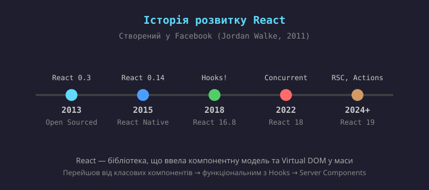
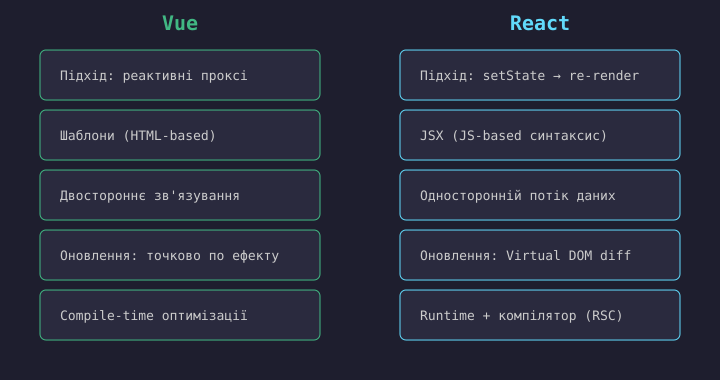
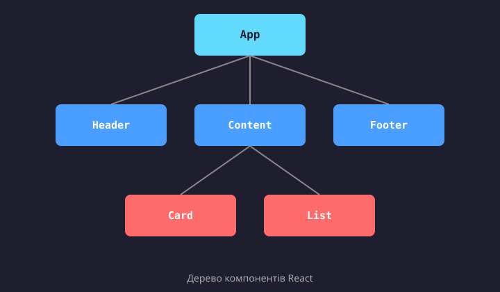
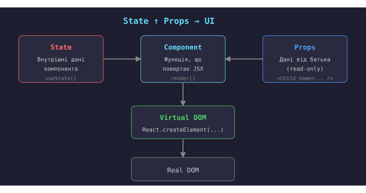
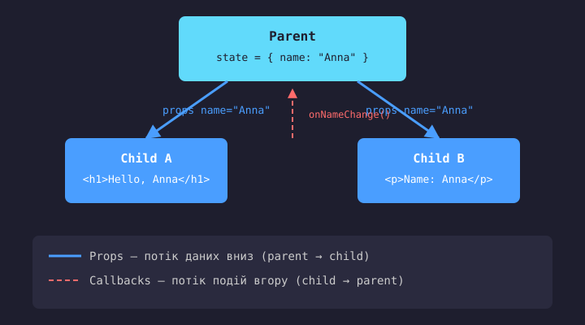
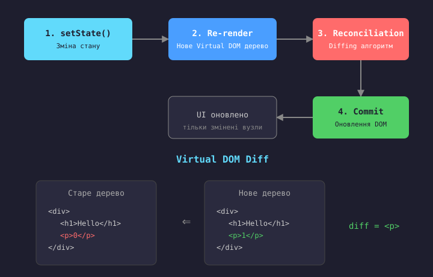

React — це JavaScript-бібліотека з відкритим кодом для розробки користувацьких інтерфейсів, створена командою Facebook (Meta) у 2013 році.
React дозволяє будувати UI з невеликих ізольованих частин — компонентів, які описують стан інтерфейсу, а React автоматично оновлює DOM при зміні цього стану.
React є основою для екосистеми: React Native (мобільні застосунки), Next.js (SSR/фреймворк), Remix, Astro та ін.
React був створений Jordan Walke — інженером Facebook — у 2011 році. На той час команді Facebook потрібен був інструмент для ефективного управління складним UI з великим обсягом інтерактивних елементів (списки новин, чат, сповіщення).
Перше використання React відбулося у Facebook Ads (2011), а згодом — у Instagram (2012). У траві 2013 року React був відкритий на JSConf US.
React ввів у масову свідомість такі концепції як Virtual DOM, компонентна архітектура, односторонній потік даних та JSX.

React позиціонується як бібліотека для побудови UI, а не повноцінний фреймворк.
React відповідає лише за rendering — перетворення стану на UI. Роутинг, управління станом, валідація форм, HTTP-клієнти — все це розробник обирає сам.
Це дає гнучкість: ви можете комбінувати React з будь-якими інструментами.
Фреймворки (Vue, Angular, Svelte) дають більше «з коробки»: роутер, стейт-менеджер, директиви, форми тощо.
React натомість пропонує екосистему: React Router, Redux/Zustand, React Hook Form, TanStack Query та інші.
Для повноцінних застосунків використовують мета-фреймворки: Next.js, Remix.

| Аспект | React | Vue |
|---|---|---|
| Синтаксис UI | JSX / TSX (JS-подібний) | Шаблони (HTML-подібні) |
| Реактивність | setState → re-render (явний) | Проксі-реактивність (автоматична) |
| Потік даних | Односторонній (top-down) | Односторонній + v-model (двостороннє) |
| Оновлення DOM | Virtual DOM + Reconciliation | Реактивні залежності (точково) |
| Стан компонента | Hooks: useState, useReducer | ref(), reactive(), data() |
| Типізація | TSX — нативна підтримка | defineProps<T>, vue-tsc |
| Позиціонування | Бібліотека (UI only) | Прогресивний фреймворк |
Компонент у React — це звичайна JavaScript-функція, яка приймає об'єкт пропсів і повертає опис UI (JSX).
Компоненти можна компонувати: один компонент може рендерити інші компоненти, утворюючи дерево.
Кожен компонент — це ізольована одиниця зі своїм станом, логікою та UI. Це дозволяє:

JSX (JavaScript XML) — це розширення синтаксису JavaScript, яке дозволяє писати HTML-подібний код безпосередньо у JS.
JSX не є шаблонною мовою — це синтаксичний цукор над
викликами React.createElement().
На відміну від Vue-шаблонів (HTML-подібних), JSX — це
повноцінний JavaScript: ви можете використовувати
будь-які JS-вирази всередині фігурних дужок {}.
TSX — це JSX з підтримкою TypeScript-типів.
// JSX (описуємо UI)
const el = (
<div className="card">
<h1>Hello</h1>
<p>{name}</p>
</div>
);
// React.createElement
const el = React.createElement(
"div",
{ className: "card" },
React.createElement("h1", null, "Hello"),
React.createElement("p", null, name)
);
JSX — це синтаксичний цукор над викликами createElement.
function Welcome(props) {
return (
<div className="greeting">
<h1>Hello, {props.name}!</h1>
<p>Welcome to React.</p>
</div>
);
}
// TSX з типами
function Welcome(props: {
name: string;
}) {
return (
<div className="greeting">
<h1>Hello, {props.name}!</h1>
</div>
);
}
Правила JSX:
компонент починається з великої літери →
один кореневий елемент (або Fragment <>...</>) →
className замість class →
вирази у {}.
// Умовний рендеринг
function Greeting(props) {
return (
<div>
{props.isLoggedIn
? <p>Welcome back!</p>
: <p>Please log in.</p>}
</div>
);
}
// Рендеринг списків
function ItemList(props) {
return (
<ul>
{props.items.map(item => (
<li key={item.id}>
{item.name}
</li>
))}
</ul>
);
}
У Vue для цього є директиви v-if та v-for.
У React — це звичайні JS-вирази (тернарний оператор, &&, .map()).
Атрибут key обов'язковий для елементів списку.

UI — це функція від стану. Змінив state → React перераховує UI.
Props (properties) — це дані, які батьківський компонент передає дочірньому через атрибути JSX.
Props — read-only (тільки для читання). Дочірній компонент не повинен змінювати свої props — це контракт React.
Потік даних у React завжди односторонній (top-down): батько → дочірній компонент через props.
Щоб передати подію вгору, батько передає callback-функцію через props, а дочірній компонент викликає її.

// Батьківський компонент
function App() {
const [name, setName] = useState("Anna");
return (
<div>
<Profile name={name} age={25} />
<Profile name={"Oleg"} age={30} />
</div>
);
}
// Дочірній компонент (TSX)
function Profile(props: { name: string; age: number }) {
return (
<div>
<h2>{props.name}</h2>
<p>Age: {props.age}</p>
</div>
);
}
Кожен виклик <Profile /> — це окремий екземпляр
з власними props. Props можна типізувати через TypeScript-інтерфейси.
State — це дані, які компонент зберігає всередині себе і які можуть змінюватися з часом.
Коли state змінюється → React автоматично перерендерить компонент і його дочірні елементи.
State — це приватне для конкретного екземпляра компонента. На відміну від props, state створюється і управляється самим компонентом.
У сучасному React state керується через Hooks:
useState, useReducer,
useRef.
import { useState } from "react";
function Counter() {
const [count, setCount] =
useState(0);
return (
<div>
<p>Count: {count}</p>
<button
onClick={() => setCount(count + 1)}
>
Increment
</button>
</div>
);
}
useState(initialValue) повертає пару:
count — поточне значенняsetCount — функція-оновлювачВажливо:
count = 5 ✗)setCount(5) ✓| Властивість | Props | State |
|---|---|---|
| Джерело | Передаються від батька | Створюються в компоненті |
| Мутація | Read-only | Можна змінювати (через setter) |
| Доступ | Через аргумент функції | Через useState / useReducer |
| Тригер re-render | Зміна props у батька | Виклик setter-функції |
| Аналог у Vue | defineProps / props | ref() / reactive() / data() |
Якщо два дочірніх компоненти потребують доступ до одних даних → стан піднімається до спільного батька, а дочірні отримують його через props.
Це ключовий принцип React: стан живе в найближчому спільному предку компонентів, які його використовують.
Для складних застосунків з глобальним станом використовують
контекст (useContext) або стейт-менеджери
(Redux, Zustand, Jotai).

React побудований на принципі UI = f(state). UI — це функція від стану: якщо state змінюється, то результат функції (UI) також змінюється.
Тому React автоматично перерендерить компонент
при кожному виклику setState — щоб
переконатися, що UI відповідає новому стану.
Це фундаментальна відмінність від Vue, де реактивність відстежує залежності автоматично (через Proxy) і оновлює лише конкретні DOM-вузли. У React — перерендериться весь компонент, а Virtual DOM вже оптимізує оновлення.
Virtual DOM — легковагне JavaScript-представлення
реального DOM. Кожен компонент повертає дерево
ReactElement-об'єктів.
Diffing алгоритм — React порівнює старе і нове VDOM-дерева за трьома евристиками:
key) допомагають
ідентифікувати елементи при перестановках.Результат diffing — мінімальний набір DOM-операцій (commit phase).
Починаючи з React 16, внутрішній алгоритм рендеринга називається Fiber. Це переписаний reconciliation-движок.
Fiber дозволяє:
useTransition, useDeferredValue,
Suspense.Fiber-дерево — це ланцюг «робочих одиниць» (units of work), які React обробляє частинами.
// Без батчингу — 2 re-render
function Bad() {
const [a, setA] = useState(0);
const [b, setB] = useState(0);
const handle = () => {
setA(1); // re-render 1
setB(1); // re-render 2
};
}
// З батчингом — 1 re-render
function Good() {
const [a, setA] = useState(0);
const [b, setB] = useState(0);
const handle = () => {
setA(1);
setB(1);
// React 18+ автоматично
// батчить обидва виклики
};
}
React 18+ автоматично батчить оновлення навіть у промісах, setTimeout та event-хендлерах. Це зменшує кількість re-render і підвищує продуктивність.
React Server Components (RSC) — компоненти, які виконуються на сервері і ніколи не гідратується на клієнті. Вони:
React 19 додав: Actions (форм-обробка), use()
хук, оптимістичні оновлення, документні метадані.
Це зближуює React з фреймворками Next.js, Remix, які використовують RSC для SSR/SSG.
npm create vite@latest my-app -- --template react-tsnpx create-next-app@latestmy-app/ ├── src/ │ ├── components/ │ │ ├── Button.tsx │ │ └── Header.tsx │ ├── App.tsx │ ├── main.tsx │ └── index.css ├── public/ ├── index.html ├── package.json ├── tsconfig.json └── vite.config.ts
main.tsx — точка входу, монтує React-застосунок у DOM.
App.tsx — кореневий компонент.
components/ — папка для багаторазових компонентів.
index.html — HTML-шаблон з
<div id="root">.
React монтується в один DOM-вузол — single root (на відміну від Vue, де може бути кілька app-інстансів).
import { useState, useEffect } from "react";
function DataFetcher() {
const [data, setData] =
useState(null);
useEffect(() => {
fetch("/api/data")
.then(r => r.json())
.then(setData);
// cleanup (unmount)
return () => cleanup();
}, []); // deps
return <div>{data}</div>;
}
Основні Hooks:
useState — локальний станuseEffect — побічні ефекти
(fetch, підписки, DOM)useRef — мутабельне значення
без re-renderuseMemo — мемоізація значенняuseCallback — мемоізація функціїuseContext — доступ до контекстуuseReducer — складний стан
(як Redux локально)